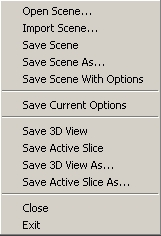

You can save a description of the current scene.
This does not save any volumes, label maps, or models, but does save the path names
to those files in an XML file.
You can then open them all again later, just by opening the scene file.
Note: Before saving the scene, you should save any new volumes, label maps, and models separately first.
Note: The default directory to save files in is SLICER_HOME.
To save a description of the current scene:

data.xml) and path, and with no options,
select Save Scene.Options.xml. To open a saved scene later:
.xml or .mrml), double-click it, and wait for the volumes and models to load.